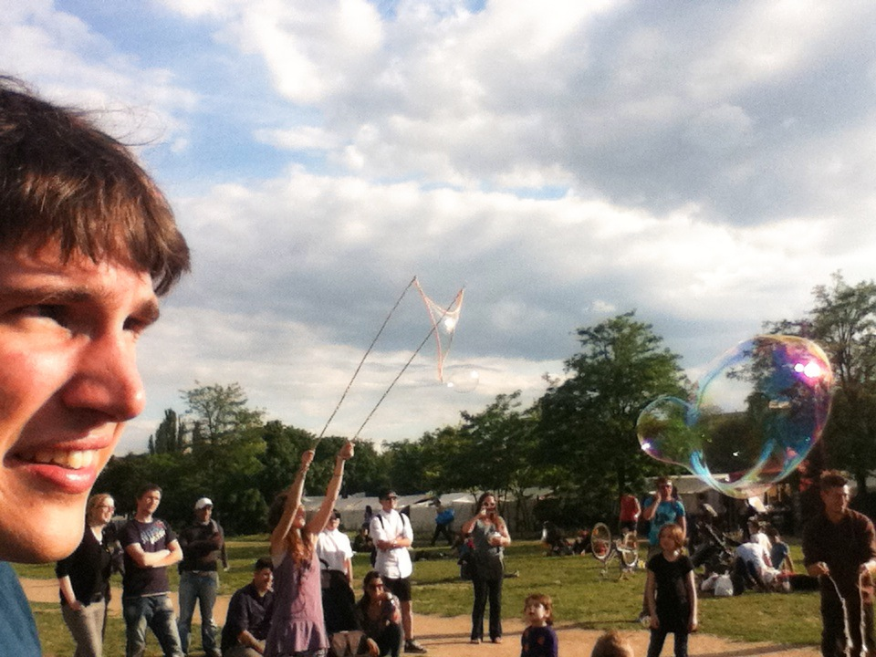

About
My name is Ben Gamari. I am a graduate student in the Physics Department at the University of Massachussetts, Amherst where I am studying the properties of biopolymers through single-molecule spectroscopy in the group of Professor Lori Goldner.
Further, I am an open-source advocate, programmer, and turtle owner. In my spare time I enjoy building things, learning programming languages, listening to music, and being outdoors. For a list of projects I have been involved in, see my Github page.
{kind=link}
This is where I put notes, thoughts, and other things that might be of use or interest to others.
Contact
- Email: bgamari@gmail.com
Recent posts
-
Toner transfer PCB etching in a (bio)physics laboratory
, tagged with pcb, etch, toner transfer.
-
Self-built kernels on Linaro
, tagged with linaro, kernel, arm.
-
JTAG debugging with a Bus Pirate, OpenOCD, and LPC1768
, tagged with jtag, buspirate, arm.
-
Installing OpenMM and GROMACS with AMBER force-field
, tagged with $tags$.
-
Installing LLVM and GHC on ARM
, tagged with ghc, llvm, arm.
-
Getting started with mchck
, tagged with $tags$.
-
Cross-compiling LLVM for ARM on Ubuntu
, tagged with llvm, arm, ubuntu.
-
Building BeagleDAQ and Tracker environment
, tagged with beagledaq, linaro.
-
Installing Amber 11 and AmberTools 1.5 on Ubuntu 11.04
, tagged with amber, ubuntu.
-
Adventures in devicetree land
, tagged with devicetree, kernel, beagleboard, linaro.